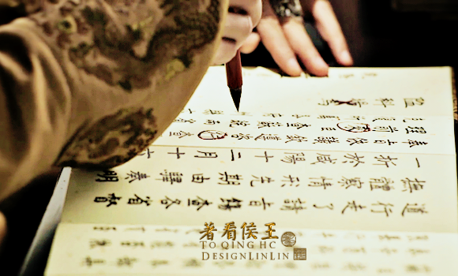

Timeline

In ancient China, people believed in the world after death. The emperor, like everyone else, paid special attention to his tomb. Like many emperors, soon after Yuanzhang Zhu became the emperor, he started to think about the tomb after his death.
According to the legend, in order to find a satisfactory location, Yuanzhang Zhu ordered three clever ministers to come up with plan. And all of them chose Zijin Mountain.

To construct this tomb, Yuanzhang Zhu recruited 100,000 soldiers and workers and this program lasted for 25 years.
When naming this mausoleum, because the queen's posthumous name is Xiao, so this mausoleum was named Xiao.